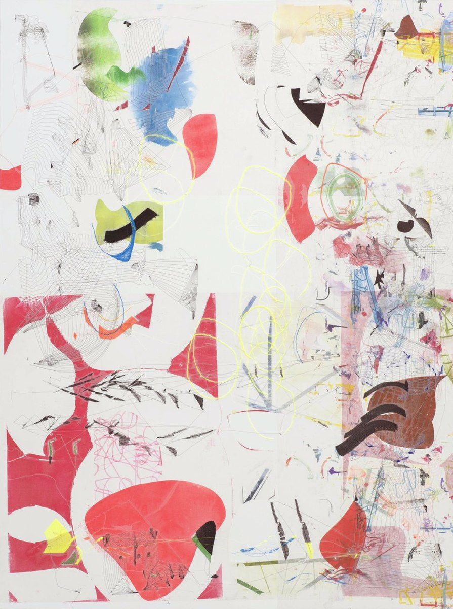

artholics
For all those who cannot live, breathe, or exist without art. This space is a safe haven where meaning and emotion reign supreme.
Avant-garde

who
- Jaime MongeMadrid
- Armengol
- José María SiciliaMadrid, 1954
- Jenya DatskoRusia, 1991
- Hugo AlonsoSoria, 1981
- Marta CamallongaValència
- Adriana GatagánBased Palma de Mallorca
- Juan Carlos VegaOviedo, 1975
- Helena TorañoLlanes, Asturias, 1984
- LantomoItalia
- Cova RíosOviedo
- Antonio OvejeroValència, 1999
- Hugo FontelaGrado, 1986
- Raquel Jiménez MolinaEspaña, 1989
- Mojé AssefjahIrán, 1970
- Mr. x PeexwoItalia, 1995
- Sol FelpetoVenezuela, 1990
- Inés LongevialFrancia